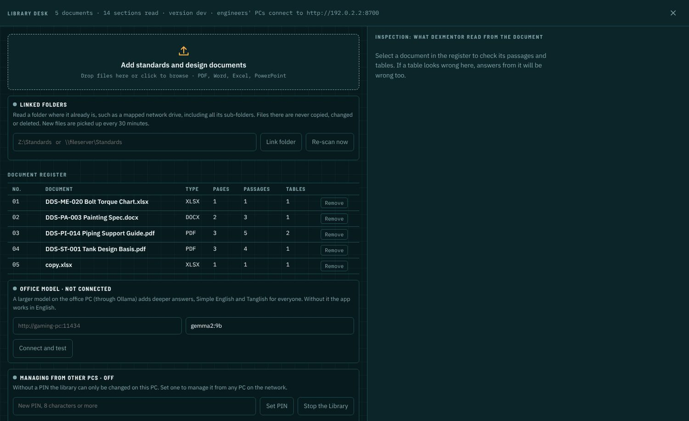
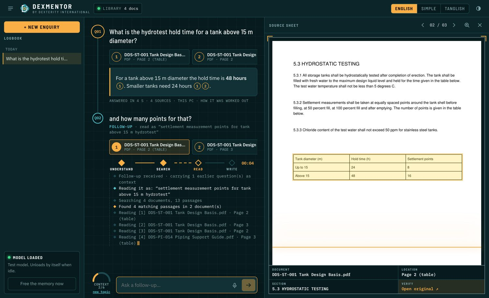

Company standards, explained
Ask the standards.
Check the source.
DexMentor answers your engineers' questions from your own design bases, specifications and standards. Every fact is pinned to the exact page it came from.
Free and open source · runs inside your office · no cloud
01 The library
Every standard you own, in one place.
Drop in PDFs, Word, Excel and PowerPoint files, or link the shared network drive where they already live. DexMentor Library reads them where they are and never changes a file.
- Sub-folders included
- New files picked up by themselves
- See exactly what was read from each document

02 The reading
It reads the table, not just the words.
Most answers engineers need sit in a table row. DexMentor finds the row and the column that match the question in code, does the percentage sums itself, and hands the model only what answers the question.
03 The answer
Every fact carries a balloon.
Like item balloons on a drawing, each number in an answer points to its source. One tap opens the original page with the passage highlighted. If a value cannot be found in your documents, DexMentor says so instead of guessing.
- Refuses questions your library does not cover
- Follow-up questions keep their context
- Watch it work: search, read, write

04 The office
Built for the PCs you already have.
The engineer app is a 9 MB download. It answers on the PC itself with a small model, frees the memory when idle, and finds the Library on your network without anyone typing an address. Add one stronger PC and everyone gets deeper answers and Tanglish.
How it works
Three installs. Then just ask.
- 01
Install the Library
On one always-on PC. Add your standards on the Library desk, or link the shared drive.
DexMentorLibrary-Setup.exe - 02
Install DexMentor
On each engineer's PC. It finds the Library by itself and offers a one-time model download.
DexMentor-Setup.exe - 03
Optional: an office model
Run Ollama on a stronger PC and link it from the Library desk for deeper answers, Simple English and Tanglish.
Setup notes
Put your standards to work.
 Built by Dexterity Design Services Pvt. Ltd.
Built by Dexterity Design Services Pvt. Ltd.